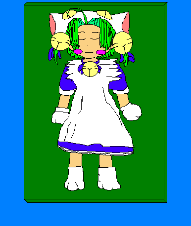

２０世紀後半から、２１世紀にかけて、人類は、自分たち自身を探求することを始めていた。それは、文化面よりも、肉体、生物的見地からの探求というべきものだった。そのひとつに「ヒトゲノム」がある。人のＤＮＡを解読しようという試みは、２１世紀に入っても続けられていた。そして、それは、新たな展開を生んでいった。それは・・・
某国立総合科学研究都市にある人工身体研究プロジェクトには、３プロジェクト・チームがあった。そして、その中のひとつである河原崎チームのドアをノックするものがあった。
だが、ドアの向こうからは、何の返事も返ってこなかった。
「コンコン。」
そのノックに反応する様子もなく、コトリ、とすら音はしなかった。ドアのノックをしていた人物は、激しくドアを叩いた。だが、中からの反応はなかった。彼は、痺れを切らせて、ドアを、勢いよく開けた。すると、中央の作業台に集まっていた研究員たちが、一斉に振り向くと、恐ろしい顔をして、彼に静かにするようにポーズをとった。彼は、その迫力に押され、黙ったまま、恥ずかしそうに、頭を下げて、詫びた。
そんな彼の素直な態度に、研究員は、彼を作業台のほうに来るように招いた。彼は、恐る恐る近づくと、作業台の上を覗いた。そこには、ライトグリーンの髪から、白い猫をモチーフにした帽子をかぶり、その帽子の下から、きれいな緑の髪を出した6歳ぐらいの女の子が、かわいい寝息を立てて、眠っていた。左右の耳の上に、髪飾り代わりの金色の大きな鈴がつけてあり、首にも鈴がついていた。そして、青いメイド服に前掛けのあるフリルのついた白いエプロン、白い手袋に白のソックス、そして、スカートの裾からこぼれるフリルのいっぱいついたパンツが、よく似合っていた。よく眠ったその女の子は、思わず抱きしめたくなるほどかわいかった。

「かわいい。」
思わず彼は、微笑んでいた。若干、２０代でこの国内最大、最新鋭の研究所の所長となり、冷徹な男、無表情なワークマシーン、Ｍｒ．能面。とまで言われた彼が、初めて人前で見せた表情とも言えた。
「かわいいだろう。」
「かわいいね。この子は、誰だい？」
「この子は、わがチームが作り出した人工身体の『デルコ』だよ。」
彼のそばにいた、研究員が、眠っている女の子を見つめたままで、得意げに彼に言った。
「デルコ？」
「そう、俺達の子供のころのアニメの主人公をモデルにした俺たちのアイドルさ。」
「でも、ここのチームの研究課題は、情報収集用の人工身体を作ることではなかったかな？」
「そうさ、だから、こいつを作ったんだ。情報収集用の身体。こいつなら、どこへでもいけるだろう？」
「でも、所長が、納得するかな？」
「大丈夫。そこは、うまくやるからさ。」
「デ、これを作った本当の目的は？」
「もちろん。生きているデルコに会いたかったからさ。」
「ふ〜ん。」
彼は、納得したように頷いた。と、彼の存在に気づいた研究員の一人が、絶句した。そして、横の所員を、肘で、つついた。うるさそうに、つついた所員を睨んだが、つついた所員の指差す方を見て、絶句した。そして、隣の者をつついた。それは、伝染病のように続き、彼と話していた所員以外は、皆、絶句して、彼のほうを見つめていた。
そして、一人の所員が、おそるおそる、彼と話をしている所員を、つついた。その所員は、崩れんばかりの笑顔で、女の子を見ていたが、うるさそうに、自分をつつく、所員を見た。
「なんだよ。デルコが起きるだろうが。」
だが、所員のうるさそうな声にも、かまわずに、つついてきた所員は、彼の横を指差した。
「何だ。なにかあるのか。え？・・・・・」
自分の横を見たとたん。彼の動きは、瞬間冷凍でもされたかのように止まった。そこには、彼と話していた男性が立っていた。その変らぬ表情から、Ｍｒ．能面といわれる男がそこにいた。
「しょ？所長！！！」
「河原崎チーフ。ご足労だが、ちょっと、あとで、所長室に来てくれるかね。頼むよ。忙しいだろうが、大事な話なものでね。」
その、抑揚のない語り口を聞いた者は、無事、所長室を出ることはできないといううわさが、研究所内では囁かれていた。河原崎は、これからの自分の運命を、想像することすらなかった。もうすでに、どうなるかは、決定された事だからだ。ふと、河原崎の目には、１３階段が、目の前に見えた気がしたが、それが、彼だけが見た幻かどうか。誰も知らない。
「聞いたか？河原崎チーフが呼ばれたって。」
「ああ、あのMr.能面にだろう。あそこのチームは、かなり趣味に走っていたからなぁ。」
「なんでも、チーム解散、と言ううわさがあるらしいぞ。」
「そうか。でも、あのデルコちゃんのボディ、払い下げしてくれないかなぁ。」
「おまえそんな趣味があったのか。でも、無理だろうなぁ。あの擬体には、かなり高度な技術が組み込まれていて、その、特許料だけでも、ゆうに国家予算を上回るといわれているからな。それを払い下げると成ると・・・・」
「ここの所員の給料では、到底むりか。」
「そういうこと。」
「かわいそうに・・・くくく」
「わらっちゃわるいぞ。ガハハハ・・・・」
「そうだな。ウヮハハハハ・・・」
「河原崎君。話はわかっているね」
「はぁ、なんとなく・・・」
「君は、大事な研究施設と、限りある研究資金を使って、与えられた研究テーマを満たさねばならないはずだな」
「はぁ」
「然るに君たちは・・あれはなんだね」
「あれと申しますと？」
「あの擬体だ。誰があんなものを作れといった」
「はぁ、あの擬体には、眼からは、レーザー、口からは、ファイヤーボム、力は、10万馬力、ジャンプ力は、垂直ジャンプ25メートル、駆ける速度は、時速132キロ。首と髪飾りの鈴は、サポートシステムで、身体にはバッテリーを内蔵。エネルギーを補充しなくても２ヶ月は活動できます。そして、エネルギーは、生物と同じくたんぱく質、炭水化物・・・・」
「もういい、誰が、そんなものを作れといった。兵器じゃなくて、潜入情報収集用擬体を作れといったはずだ」
「ですから、あのかわいい姿で、人を和ませて、情報収集を・・・」
「姿なぞ、スパイダータイプで十分だ。で、搭載の人工知能は、どうなのかね」
「はあ、知能のほうは、理論上、人間と同じです。ただし・・・」
「ただしなんだ」
「人間の子供と同じように、教育していった場合でして、知識の強制入力をした場合は、知力は、5歳程度で止まってしまいます」
「なんだと、それでは、命令の実行に支障をきたすではないか。もう少しあげられないのか。既成の人格転写はどうだ」
「転写時のロス率が高く、最高でも7歳児程度の記憶と知識の転写しか出来ません。ただし、あの帽子の形をしたヘッドカバーがないと、転写した記憶は、徐々に失われます」
「それでは、困るんだよ。転写率は上げられないのかね」
「これ以上は、理論上も無理です」
「うむぅ〜〜」
真崎所長の、いつもの能面フェイスが、苦虫を噛み潰したような顔になった。
「とにかく、あのボディは、解体だ。ばらしてくれたまえ」
「え！なんと・・・」
「つかえる部分だけ残して、あとは、廃棄したまえ。いいね」
「でも・・・」
「これで、話は終りだ。帰りたまえ」
真崎所長は、それだけ言うと、河原崎が、その場にいないかのように、デスクの上の書類の整理を始めた。
河原崎は、静かに頭を下げると、その部屋を出て行った。そして、河原崎は、重い足を引きずって、研究室に戻って来た。
「チーフ、所長は、なんと？」
「あの能面、あほなことを言っていませんでしたか」
「チーフ」
所員たちの質問に、河原崎は、何一つ答えられなかった。デルコを、解体廃棄しろと言う、真崎所長の言葉が、頭の中を走り回って、何も考えられなかった。
「どうしたら、いいんだ」
頭を抱えながら、河原崎は、つぶやいた。
「みょ？」
いつの間に起きたのか、デルコが、河原崎を覗き込んでいた。
「なんでもないよ。デルコ」
河原崎は、彼の顔を覗き込むデルコに、やさしくそう言った。完全作動していないデルコの脳は、ただ、プログラムされた動きをしているだけだった。河原崎が、帰ってきたら、彼の顔を覗き込むように組み込まれたプログラムどおりに・・・
「デルコ」
デルコの無邪気な顔を見つめていると、河原崎に目に涙が溢れてきていた。そんな、河原崎を見て、所員たちは、ただ、黙って彼を見守るだけだった。
と、突然警報アラームが、研究室内に、けたたましく鳴り響いた。
「なんだ、なんだ、どうしたんだ」
「あのアラームは、侵入者だ。だれか、警備室に、状況を聞いてみろ」
突然のアラームに、動転しながらも、所員たちは、情報収集に集中した。そして、ときどき、何か破裂音と、銃撃の音が聞こえていたが、やがてそれも治まり、所内は静かになった。
外から聞こえて来るどんな音も聞き取ろうと所員たちが、息を殺している時、静かになった研究室のデスクの電話が、突然、けたたましく鳴り出した。
「ハイ、河原崎研究室。え、所長が・・それで、ハイ、ハイ、ハイ、わかりました。チーフに代わります。チーフ、佐古副所長からです。」
「あ、ああ」
気が抜けたようになった河原崎は、差し出された受話器を手に取った。
「ハイ河原崎です」
『佐古だ。河原崎君。きみは、あのボディ、もう、解体したのかね』
「はぁ？」
『所長に解体するように言われた、あのボディだよ』
「はぁ、まだですが・・・それがなにか」
『それは、よかった。すぐにつかえるのは、君のところのボディだけだからな。他のところのは、まだ、試作段階にも行っていない。河原崎君、そのボディを持って、すぐに第24医療治療室にきてくれたまえ。急いでくれよ、一刻を争うのだ』
「は、はぁ」
『わかったな。いそげ！』
いつもは、温和で、怒鳴ることはおろか、人を急かす事もない副所長の佐古が、何時になく興奮していた。その雰囲気に、河原崎は、なにか言い知れぬ予感がした。最悪の予感が・・・
河原崎は、所員に、デルコをのせた台車を運ばせて、第24医療治療室に急いだ。そこは、別名「レコーディング室」と呼ばれるところだった。死期の迫った各分野の第一線の研究者の知識を、超スーパーコンピューターに保存するための装置が設置されているところだからだ。だが、人は、知識だけでは、人格形成が出来ないために、超スーパーコンピューターには、死んだ知識が溜まっているだけだった。
河原崎と所員たちが、第24治療室のドアを開けると、そこには、この研究所の幹部が、中央の治療ベッドを囲むように立っていた。そして、そのベッドの上には、真崎所長が、横たわっていた。
「河原崎。デルコを運んできました」
「ああ、ご苦労さん。すぐに、人格転写の準備をお願いします」
白髪を、七三に分け、鼻の下に白く豊かなひげを蓄え、シワだらけの細面の顔に、人のよさそうな笑みを浮かべて、副所長の佐古が、河原崎に言った。
「人格転写ですか。どなたの？」
「所長の人格です。所長は、不法侵入者に撃たれて、重体だ。助かる見込みはない。いまなら、まだ、人格転写ができるはずです。一刻を争います。いそいで・・・」
河原崎と所員は、佐古のその言葉に、突然スイッチを入れられたロボットのように、きびきびと動き出した。そして、彼らが、人格転写準備を終えたのを確認すると、佐古は、スイッチを入れた。
「ウィ〜〜〜〜ン」
装置は、静かに動き始めた。
「守さま。お時間です」
「ハイ、わかったよ。里美さん」
7歳になった守は、そっと、今まで手に持っていた小さなキャラカードを、目の前の分厚い辞典の中に隠すと、まだ、小さい身体に不釣合いな大きな椅子から降りて、部屋を出て行った。
守の生まれた真崎家は、資産家であり、科学者を多く輩出した家柄でもあった。そして、生まれてすぐに英才教育を受けてきた守は、通常の天才児以上の知力を見せていた。その反面、子供らしさのない老齢なところもあった。だが、真崎家の者にとっては、それはたいした問題ではなかった。そして、彼も、それが当たり前と思っていた。すこし前までは・・・
「守さん。あなたは、子供なんだから、もっと子供らしくすべきよ」
そう言って、彼にアニメのキャラカードをくれたのは、２ヶ月前に辞めさせられたメイドだった。
「デルコはね。ある星の王女なの。でも、お城に閉じ込められた生活がいやで、飛び出したの。そして、地球にやってきたって訳よ」
「こんな猫みたいな耳なんて、おかしいよ。それに、このみどりの髪だって・・・」
「そうね。でも、すでにあるものばかりを組み合わせても、おもしろくないわよ。人間には、想像力があるんだから、それを生かして、いろんなものを作り出さなくちゃ。子供は、想像の天才なのよ。段ボール箱を、ロケットや、お城にしたりもできるの」
「なるわけないじゃないか」
「そうね。でも、想像の世界では、いろんなものになれるのよ」
「ふん、稚拙だなぁ」
守は、そのメイドが言うことが、あまりに稚拙で、あきれ返っていた。でも、その反面、彼は、彼女の言葉に惹かれている自分に、気づいてはいなかった。そして、メイドが、時々聞かせるデルコの自分勝手で、周りの迷惑を気にしない行動と、その反面、ふと見せる優しさに、いつの間にかデルコに、あこがれていった。守は、知らず知らずのうちに、変わっていった。いままで、気にすることのなかった庭の草花にも、いつのまにか目が行き、声をかけることもなかった使用人たちにも、時々、声をかけるようになった。それは、使用人たちの間でも話題になるほどだった。
だが悲しみは、突然やってきた。メイドが、守に、子供らしさを教えているのがばれたのだ。それが、守の親の知ることとなり、彼女は解雇された。彼女が、守に、あげたものは、すべて、取り上げられ処分された。だが、このカードだけは、守が隠していたので手元に残った。
だが、その後。あのメイドが、辞めさせられた理由が、誰かに頼まれて、守を普通の子にしようとしたからだという噂が、彼の耳にも入ってきた。それは、彼の存在を疎ましく思った者たちの策略だと、まことしやかにささやかれていた。幼い守は、それを信じ、あのキャラカードは、捨てられることはなかったが、封印されることになった。そして、長い時間がたった。
「人格転写率78％。人格年齢5歳です」
「あと、3時間で、転写終了します。終了時の人格年齢7歳です」
オペレーターの冷静な報告を聞きながら、河原崎は、隣で、じっと転写作業を見つめる佐古のほうを見た。
「人格年齢7歳では、所長の再生とは言えないのではないですか」
「ああ、でも、真崎守と言う子供の再生は出来る。彼には、新しい人生を歩いて欲しいんだ。天才少年としてではなくて、ただの子供としてのね」
その、人懐っこそうな笑顔で、佐古は、河原崎に微笑みかけた。
「でも、あのボディでは・・・」
「4年しか持ちませんか。それでは、あなた方に継続して、研究してもらいましょうか。もっと長生きできるボディを」
「それに、目からレーザーが・・・」
「ふふふ・・・目からレーザーですか。あなたが所長に言った性能が、すべてとは言いませんが、嘘なのは知っていますよ。いくらデルコファンでも、あの子をそこまでは出来ないでしょうからね。そこまですれば、あの子は、単なる破壊兵器ですから」
河原崎は、この副署長が、人のよさそうな外見からは、信じられないほど有能なことに気がついた。それでなくては、あの所長の補佐は出来ないだろう。副所長は、デルコのボディを作る時に、彼らが、モデルそっくりに作ったのは、外見だけで、ほかは、普通の子供と同じに作ったことを見抜いていた。だから、あえて、このボディを使ったのだろう。他の研究室でも、試作品を完成させたところはあるはずだからだ。ただ、それは、人からかけ離れた姿になっていたが・・・
「転写終了。目覚めます」
所長のボディの横に横たわっていたデルコが、転写用のコードの繋がったメットをつけたまま、起き上がった。
「あの、ここはどこ？ボクはどうしたの」
起き上がったデルコは、ぼんやりとした顔つきで、河原崎たちに聞いた。
「お前は、病気だったんだよ。デルコ。このおじさんたちが治してくれたんだ。お礼を言いなさい」
「デルコ？ボクは、男の子だよ」
「フフフ、それなら、お前には、おちんちんがあるかい」
「あるよ。ちゃんとここに・・・あ、ない。ボクのおちんちんがないよ〜」
「あるはずがないじゃないか。お前は、わたしのかわいい孫娘だからな。わかったかい、デルコ」
「わかった・・・おじいちゃん」
「いい子だ。デルコ」
まだ納得がいかないような顔をしていたが、うなずくと、頭のコードをはずし、デルコになった所長は、ベッドから飛び降りた。
「おじいちゃん。もう、ボク・・いいえ、わたしは、病気治ったの？」
「そうだよ。もう大丈夫だ。デルコ、よかったな」
「うん。おじちゃん、ありがとう」
そこには、生きて動くデルコがいた。
「よかったね・・・デルコちゃん」
「うん」
あのMr能面といわれた所長の面影はなかった。天真爛漫な幼くかわいい女の子がいるだけだった。
「さ、デルコ。いこうか。おじいちゃんと一緒におうちに帰ろう」
「うん、おじちゃん、バイバイ」
「バイバイ」
振り返って、手を振るデルコは、何者にも変えがたく可愛かった。そのデルコの命は、あと4年。河原崎は、ゴールの見えない時間制限の苦しいマラソンのスタートの合図を聞いた気がした。
あとがき
レンタルボディの開発時期の頃の事が気になり、好風さんに書いて見たいと言って、かなりの時間が経ちました。
そして、DCさんの描く「デジコ」にインスピレーションを頂いて、何とかここまで来ました。
お二人に心よりお礼申し上げます。お気づきと思いますが、「デルコ」のモデルは、DCさんが描いた「デジコ」がモデルです。
オリジナルのデジコでは、ここまで行きませんでした。
それでは、不評を覚悟して、お便りお待ちしています。（だって、TS色薄いもの・・・）
□ 感想はこちらに □